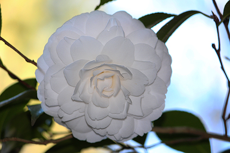
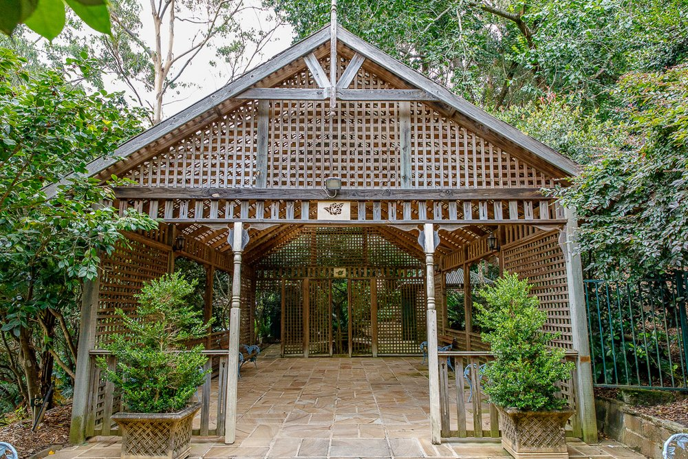

Our Species
In the early 1950’s rhododendrons, azaleas, gardenias, and other exotics sympathetic with native trees and ferns were planted.
Concurrently 80 Camellias were planted and many of these are now over 60 years old, e.g. Camellia japonica ‘Cassandra’. Also growing in the gardens are specimens of Max Cotton’s namesake, namely Camellia japonica ‘Max Cotton’ and its first exhibition in 1956 drew the attention of the world-renowned Camellia enthusiast, Professor E. G. Waterhouse.
Currently, the garden hosts over 250 cultivars and species, with a peak flowering of Camellias from July to August.

Florence Cotton Reserve
Florence Cotton Reserve - which is popular for people who like hiking and bushwalking.
The adjacent bushland of approximately 17 hectares, with blackbutts, blue gums, turpentine trees, allocasuarina and ferns.
Even though this area is not suitable for prams or wheelchairs as there are a lot of stairs, the bush loop is an area as they have stable and even stairs and only take up to 1 hour to finish it, as well as visitors can explore the beauty of nature from many plants species and scenic forest surrounding.

Other areas
The garden with a lovely floral setting and a covered pavilion area are very for weddings or some events and celebrations. There’s plenty to explore in the gardens, with a shade house containing fish ponds, a gazebo, three waterfalls, informal lawn areas, picnic tables and even a rainforest walk (Hornsby Shire Council, 2020)
Explore all areas here: More images